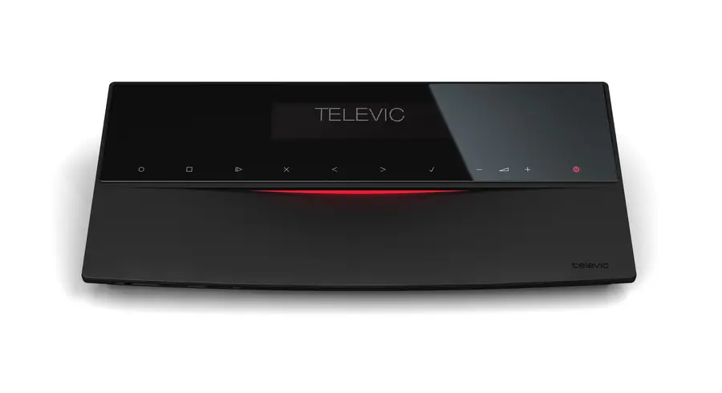

Televic D-Cerno
Televic D-Cerno - это базовая цифровая дискуссионная система, предназначенная для малых и средних помещений. Система обладает всеми основными функциями для проведения полноценных конференций. Голосовое управление пультами, интеллектуальное отключение, защищенные микрофоны, гигиеничные сенсорные кнопки делают систему уникальной в своем роде.